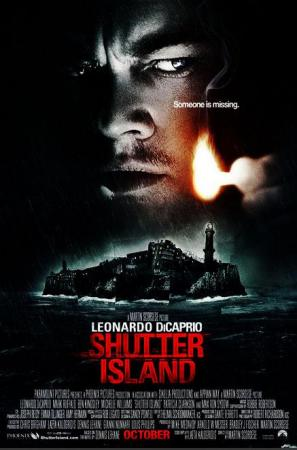

Shutter Island |
||
|---|---|---|
|  | Sinopsis: En el verano de 1954, los agentes judiciales Teddy Daniels (DiCaprio) y Chuck Aule (Ruffalo) son destinados a una remota isla del puerto de Boston para investigar la desaparición de una peligrosa asesina (Mortimer) que estaba recluida en el hospital psiquiátrico Ashecliffe, un centro penitenciario para criminales perturbados dirigido por el siniestro doctor John Cawley (Kingsley). Pronto descubrirán que el centro guarda muchos secretos y que la isla esconde algo más peligroso que los pacientes. Thriller psicológico basado en la novela homónima de Dennis Lehane (autor de "Mystic River" y "Gone Baby Gone"). |
Director:Martin Scorsese Reparto:Leonardo DiCaprio, Mark Ruffalo, Ben Kingsley Año: 2010 Duracion:138 min Pais:Estados Unidos |
Criticas Profesionales:Oti Rodriguez Marchante"Tiene uno de los guiones más sorprendentes que se recuerdan (...) Brillante, excesiva, tramposa (...) Magnífica interpretación de DiCaprio (...) La mezcla de terror gótico con lujosa serie B y con terrible drama semioculto es brutal. |
Trailer |
Obtener:AlquilarComprar |
Registrate/Iniciar Sesion